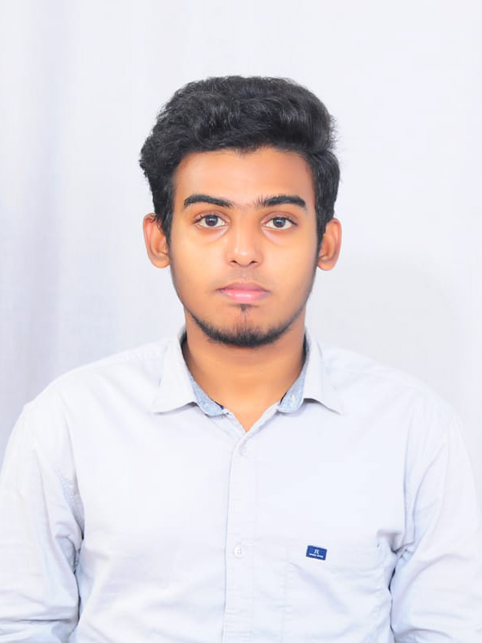

|

MOHAMAD NASEER M
8098280242
mohamadnaseer515@gmail.com
Objectives:-
I Am Hardworking
And Self Motivating Person
Skills:-
1.C basic
2.Python basic
3.Java basic
|
Educational Qualification:-
| Class/deg |
Institute |
Board |
Year Of Paasing |
| BCA |
Achariya Arts and Science college,Pondicherry |
Pondicherry University |
2019 to 2022 |
| HSC |
Stansford International Higher secondary school,Pondicherry |
State Board |
2019 |
| SSLC |
Petit Seminare higher secondary school, Pondicherry |
State Board |
2017 |
Additional Qualification:-
1)Machine learning masters with deep learning
2)Diploma in Computer Hardware Maintenance
Personal Profile:-
| DOB: |
29\10\2001 |
| LANGUAGE KNOWN: |
Tamil,English,French(read and write) |
| HOBBIES: |
Playing,Travelling |
|